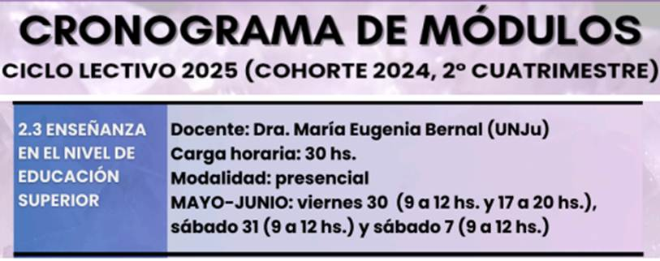

CONTENIDO DE LOS ANUNCIOS
Inscripción abierta al módulo 2.3
 (PRESENCIAL - AULAS A CONFIRMAR)
La INSCRIPCIÓN AL MÓDULO será desde el 22/05 hasta el 28/05 a las 23:59PM. Recuerden que para inscribirse deben estar reinscriptos/as previamente.
La modalidad para inscribirse es la siguiente:
1. Dirigirse a la página web de la Especialización en Docencia Superior
2. Seleccionar la solapa correspondiente: "COHORTE 2024 Y ANT" o "COHORTE 2025" (según corresponda. Tienen botones de pago diferenciados)
3. Hacer clic en el botón de pago color rojo (Con Beca/Sin Beca según corresponda)
4. Llenar este formulario adjuntando el comprobante de pago
Si desean abonar en efectivo el módulo pueden hacerlo en Secretaría Administrativa de la Facultad de Humanidades y Ciencias Sociales (Otero, 257) en los siguientes horarios:
- • Mañana: 8:00 a 12:00 hs
- • Tarde: 15:00 a 18:00 hs
También deben llenar el formulario correspondiente y subir el comprobante emitido por la Secretaría mencionada.
ARANCELES PARA COHORTE 2024 Y COHORTES ANTERIORES:
- • Módulo sin beca: $50.000 (PESOS CINCUENTA MIL)
-
• Módulo con beca: $45.000 (PESOS CUARENTA Y CINCO MIL)
(Para acceder a la Beca UNJu debe adjuntar junto con el comprobante de pago la resolución de designación o último recibo de sueldo o algún documento que compruebe que trabaja para la Universidad)
ARANCELES PARA COHORTE 2025
- • Módulo sin beca: $70.000 (PESOS SETENTA MIL)
-
• Módulo con beca: $65.000 (PESOS SESENTA Y CINCO MIL)
(Para acceder a la Beca UNJu debe adjuntar junto con el comprobante de pago la resolución de designación o último recibo de sueldo o algún documento que compruebe que trabaja para la Universidad)
ACLARACIÓN: Si necesitan factura del pago efectuado deben concurrir a Secretaría Administrativa y solicitar la misma con el comprobante del pago.
Si no estás registrado en el SIU Guaraní, debes ingresar a este link y crear tu usuario. Una vez registrado en SIU Guaraní debes ingresar acá con tu usuario y contraseña, dirigirte a la opción
Trámites - Preinscripción a propuestas - Elegir propuesta -
Facultad de Humanidades y Ciencias Sociales Pos y seleccionar la opción
Especialización en Docencia Superior (accesible sólo desde las 10 hs. del 01/04/2025). En la oficina de Docencia Superior (Canónigo Gorriti, 237) se verificará tu documentación junto a los requisitos que debes enviar previamente a nuestro mail: Y si todo está correcto se te habilitará a realizar el pago de la Matrícula Anual ($70.000) y el costo del Primer Módulo "Debates pedagógicos contemporáneos", mediante botones de pago habilitados.
ACTO DE SOCIALIZACIÓN DE MEMORIAS DOCENTES 2024 |
Muchas felicidades, flamantes Especialistas en Docencia Superior. Desde la Dirección les deseamos éxitos y muchos logros más.
Compartimos imágenes del Acto de Socialización, donde contamos con la presencia de autoridades, estudiantes, docentes y público en general a quienes agradecemos su compañía.
CURSO DE ORALIDAD
Horas totales: 60 hs reloj
Lunes a viernes de 8:00 a 13:00hs Calle Canónigo Gorriti Nº 237 - Primer patio en diagonal izquierda 388xxxxxx espdocen@fhycs.unju.edu.ar
Proceso de Preinscripción
El día de mañana, martes 1 de abril desde las 10:00AM, se habilitará el Sistema SIU Guaraní para realizar la preinscripción a la carrera, requisito fundamental para la inscripción definitiva.
En este link verás un tutorial.
Lo que debes tener en cuenta al momento de realizar la preinscripción
Inscripción definitiva
ACREDITABLE PARA ALUMNOS/AS DE CARRERAS: Maestría en Economía Popular, Especialización en Economía Popular, Especialización en Investigación Educativa y MELF
CRONOGRAMA:
Podrán descargarlo en este Link .
PARA CONOCER OBJETIVOS DEL CURSO Y REALIZAR LA PRE-INSCRIPCIÓN INGRESAR ACÁ.
Informes en Secretaría de Posgrado de lunes a viernes de 9 a 12. O comunicarse correo electrónico: comunicacionposgrado@fhycs.unju.edu.ar

Horario de Atención
Lunes y martes de 15:00 a 19:00hs
Jueves de 16:00 a 19:30hs
Lugar
Teléfonos
388xxxxxx
Correo